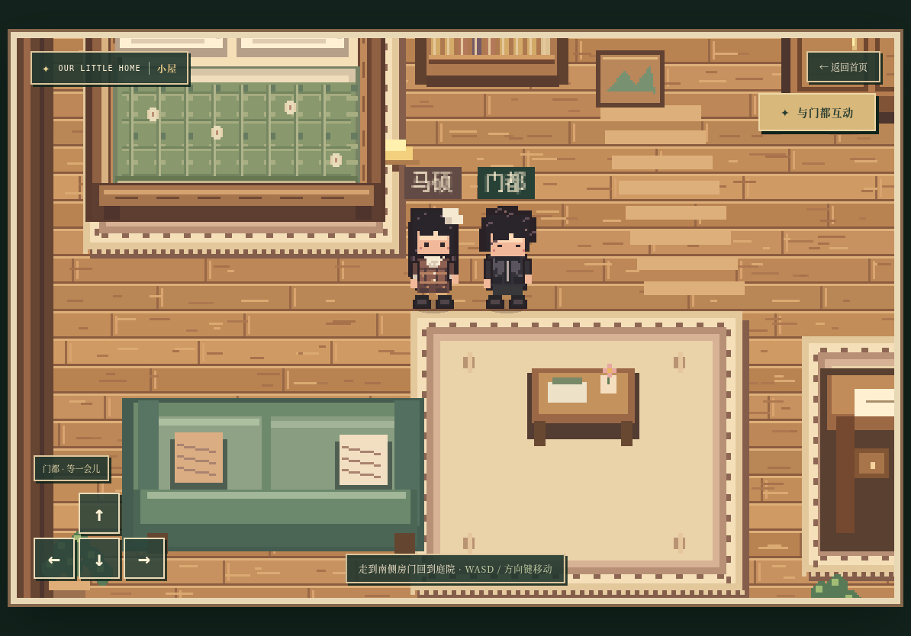
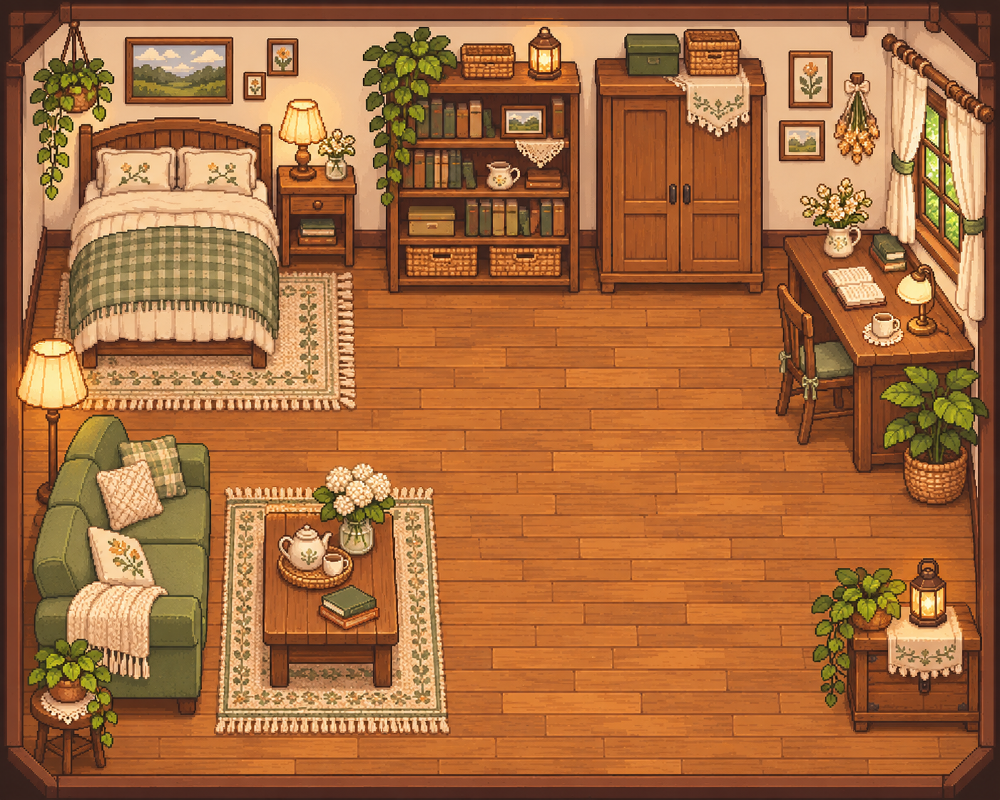
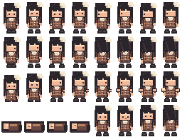
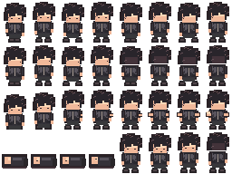

室内与双人角色美术样板
请分别看「实际游戏截图」和「美术方向概念图」。后者用于确定细节密度与气氛，没有地图碰撞或逐帧素材，尚未接入游戏。
室内可玩样板

目标细节与氛围


双人默认服装四方向图集
每张 256×192 透明 PNG；单帧 32×48。前 16 帧依次为向下、向左、向右、向上，各方向四帧。后 16 帧为临时互动姿态。点击图集可打开原始 PNG。




本轮范围
| 已接入 | 仍需制作 |
|---|---|
| 独立床图与遮挡、双人默认四向站立和行走、双服装资源接口 | 照片级人物精修、正式互动动画、第二套服装、其余家具与庭院逐件重制 |
此页供美术品质验收。当前角色和床图仍未达到上方概念画的精修水平；正式素材需要按游戏网格重新绘制，不能以概念画替代。